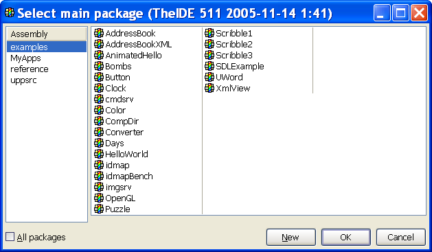
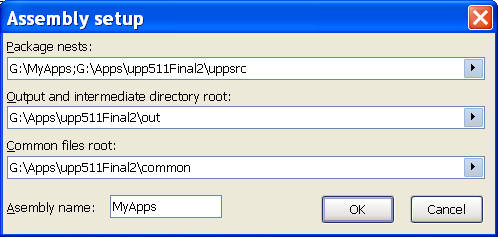
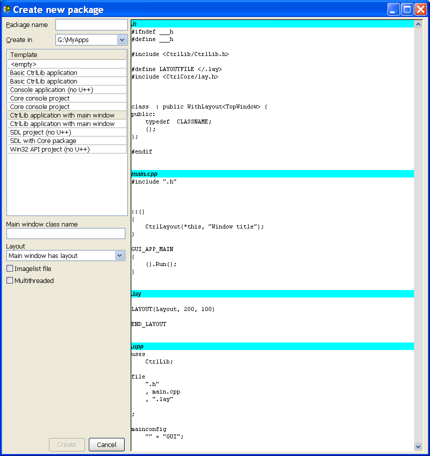
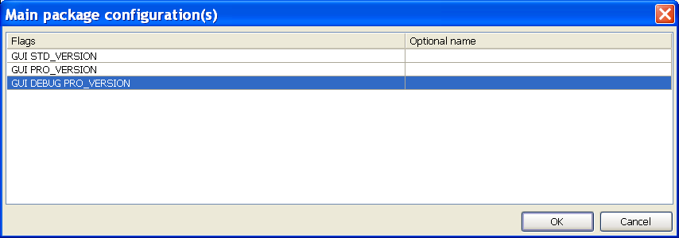
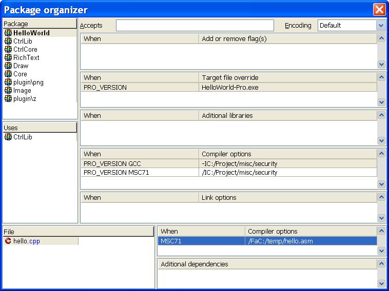
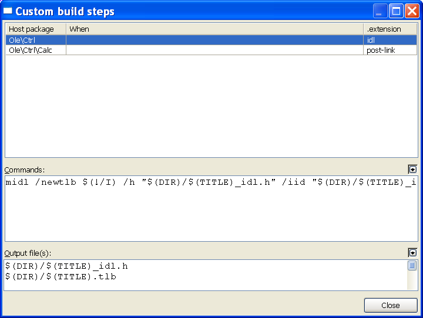

Configuring Packages & Assemblies
Table of contents
1. Opening a package
2. Assembly setup
3. Creating a package
4. Package build configurations
5. Package build settings
6. Adding Dependent Packages
7. Custom Build Steps
8. Adding source files to a package
9. Building packages from an ESC macro
10. Binary resource extensions
1. Opening a package
To open a package, the Set-main-package option on the File menu in TheIDE is used. The "Select main package" dialog will appear.

First, select an assembly in the left hand pane, then select one of the assembly's packages in the right hand pane. Click OK and the selected package will be opened in TheIDE with the package name shown in TheIDE application window title bar. The package that has been opened is referred to as the main package and appears first in the list of packages shown at the left-hand-side of TheIDE.
In the select-main-package dialog, if the "all packages" checkbox is unchecked, then the right hand pane will show only packages that have main configuration. "Main configuration" refers to the settings that determine how a package is built. Packages that have no main configuration can't be built by themselves but they can be used by other packages and they can be opened in TheIDE.
The build configurations for the main package can be assigned using the Main-package-configuration option on the Project menu. Predefined build configuration options are target type (executable or dll), application style (GUI or non-GUI) and thread model (single-threaded or multi-threaded). These options determine the switches supplied to the compiler and linker and the choice of libs to be linked with when the package is built. These configuration options are referred to as main configuration and are stored in the mainconfig section of the package definition file (i.e. the <package-name.upp> file).
A package that has no main configuration (no mainconfig section in the .upp file) cannot be built because there is no information that says what target type or style it is etc. If the "all packages" checkbox in the select-main-package dialog is unchecked, only packages which have main configuration will be shown. When a package is first created it will have no main configuration unless one of the package template options was used (see "creating a package" below).
For more detail on the organization of packages, assemblies and nests, see this.
2. Assembly setup
From the Select-main-package dialog shown above, the settings for an assembly can be changed (or a new assembly created) by right-clicking on the assembly name and selecting "edit assembly" (or "new assembly").

Clicking on the arrow at the end of each edit box allows you to browse to the folder whose path you want to add. The "package nests" item may contain multiple paths and these are separated with semicolons.
When a new assembly is created, the paths that are assigned initially, are copied from whichever assembly was selected before the new assembly was created.
3. Creating a package
To create a new package, select the assembly in the Select-main-package dialog then click the New button. The Create-new-package dialog will appear.

The drop-down list box labeled "Create in" allows you to select one of the assembly's nests (folders) into which the package should be created. The edit-box labeled "Package name" allows you to enter the name of the new package. If the package is to be located in a sub-folder of the nest folder, then the package name should include the sub-folder name(s). e.g. If the path for the selected nest is C:/MyApps and you want a new package named "Web" to be in the C:/MyApps/Project1/Client folder then you enter "Project1/Client/Web" (without the quotes) in the Package-name edit box.
You can choose one of the template options according to the type of package you are creating. When you select a template, the right hand pane shows which files will be created and what content they will have. If you select the "empty" template, then the only file which will be automatically created is the package definition file.
Click the Create button when you have entered all the necessary information and the package will be created and opened in TheIDE.
The CtrlLib application with main window template
The Create-new-package example dialog box above shows the CtrlLib application with main window template selected. This is the template to select if you are creating a standard GUI application. You need to enter a name for the C++ class that represents the main window
The drop-down list labeled "Layout" gives the following choices:
No layouts
Generate layout file
Main window has layout
Main window has OK/cancel
If you want to create the visual interface for your package at design time (i.e. using TheIDE) then you should select either "Generate layout file" or "Main window has layout". If "Main window has layout" is chosen, then at runtime when the application is started, a visible window will appear. If the application needs to start without a visible window (or does not always want the same visible window), then you can choose "Generate layout file".
4. Package build configurations
The left-hand drop-down list on TheIDE toolbar shows which build configuration is currently selected. To change the build configurations for the main package use the main-package-configuration option on the Project menu in TheIDE. Alternatively, click within the text area of the drop-down list that shows the currently selected build configuration. The "Main package configurations" dialog will appear.

A package can have more than one build configuration. Each line in this dialog corresponds to one particular build configuration. To add a new line, use mouse right click and select "append row". To edit an existing line, right click and select "edit". In the right-hand column (headed "optional name") you can optionally enter a name for that particular build. This name will appear in the left-hand drop-down list on TheIDE tool bar. When a build command is initiated in TheIDE, the main package is built according to the currently selected build configuration.as shown in the drop-down list. For example, a package can have a DEBUG build and a non-DEBUG build. If the DEBUG flags name is not present in a particular build configuration, then a non-debug build occurs by default. Similarly, if the MT name is not present then a single-threaded application is built by default and if the GUI flags name is not present, then a console type application is built.
The names that appear in the Flags column are alpha-numeric strings separated by spaces. There are some predefined names that can be used (e.g. GUI DEBUG WIN32 MT) however, you can enter any names you desire (e.g. PRO_VERSION) as shown above. TheIDE build process will react to some of these names (such as GUI and DEBUG) and these affect the switches etc that are used when the compiler or linker are invoked.and also which libs are used. Each of the Flag names also becomes a #define'd MACRO name that can be used in source files where each flag name is prefixed with "flag" e.g. flagGUI, flagDEBUG, flagSTD_VERSION. Hence you can then test for these in source code with #ifdef or #if defined(flagNAME)
All of the packages that are directly or indirectly used by the main package are built with the same build configuration as the main package, however it is possible to restrict a Flag name to apply to the main package only by preceding it with a dot (.) character. If a Flag name is preceded by a dot character (e.g. .ENCRYPT) then that name is in effect only when the main package source files are compiled, unless a dependent package is explicitly configured as "accepting" a particular "dotted" build Flag name. Flag names that are not preceded by a dot character are in effect for both the main package and all of the packages it uses.
The build configuration information is stored in the mainconfig section of the package definition file.
Flag names such as GUI and DEBUG can be detected in the package-organizer dialog box by entering them in the "when" column. This includes all of the names that are present in the build configuration flags names list, not just predefined names e.g. PRO_VERSION. By using these names in the package-organizer dialog, the build process can be customized for each build configuration.
5. Package build settings
From TheIDE project menu, select package-organizer.

The package organizer allows the setting of a number of things affecting the package build process. The "When" column allows control of when the item in the right hand column is applied. In the above example, the -I compiler option is applied with GCC compiler and /I is applied with the Microsoft (MSC71) compiler.
Target file override. Allows specification of a name for the final executable. The default name is the package name.
Additional libraries. Allows specification of the path and name of object file libs and shared libraries that will be supplied to the linker.
Compiler options. These are text strings that will be supplied on the command line to the compiler. These will be added to the command line after (at the end of) the compiler options generated by TheIDE. These options affect all source files being compiled, not just those from the main package, however you can use build flags and the "dotted" mechanism (see Package-build-configurations above) to restrict which packages the options are applied to.
Link options. These are text strings that will be supplied on the command line to the linker. These will be added to the command line after (at the end of) the linker options generated by TheIDE.
You can also set additional compiler options for individual source files. In the "additional dependencies" list you can specify a list of files that a source file is dependent on. This means TheIDE will check these additional files to determine whether a source file should be rebuilt.
The "accepts" edit-box allows selection of which "dotted" build flags are accepted and applied by this package. When the main package is built, the build flags of the main package are passed to all of the packages that are "used" by the main package, however, dotted flags are accepted by a "used" package only if listed in the "accepts" edit-box for the used package. Build flags from the main package that are not "dotted" will be applied to all used packages regardless of whether listed in the "accepts" list of a particular package or not.
6. Adding Dependent Packages
If a package uses other packages, then they must be "added" to the using package. For example, the HelloWorld package in the "examples" assembly uses the CtrlLib package which you can see in the example package-organizer dialog in the previous section. The CtrlLib package uses the CtrlCore and RichText packages. The package-organizer dialog allows you to add or remove dependent packages and you can also select the order in which the used packages are built. Use mouse right-click in the "uses" pane of the package-organizer dialog to do this. Alternatively you can use "add package" from the Project menu.
7. Custom Build Steps
Custom build steps allow you to specify how files with a particular extension are "built". For example, you can specify the invocation of a particular assembler for assembler files or the Microsoft Intermediate Definition Language compiler (MIDL) for IDL files. You can even invoke the C++ compiler with a custom build step if you wish. To bring up the Custom-build-steps dialog, select Custom-build-steps on the Project menu.

In the example above, you can see that files with an extension of idl have a custom build step which invokes midl to generate a header file and a type library file. The output files generated by the custom build step need to be listed in the Output-files section because TheIDE uses these to determine when they are out of date with respect to the input file and do a rebuild.
If the extension is specified as "pre-link", then the specified command is executed prior to invocation of the linker. If the extension is specified as "post-link" then the command is executed after linking. The uppsrc Ole/Ctrl/Calc package uses "post-link" to register an .ocx by executing
regsvr32 /s /c $(OUTPUT)\calc.ocx
The "When" column in the custom-build-steps dialog allows the entry of build flags so that the custom build step can be applied selectively e.g. for one particular compiler or to have separate commands for debug and non-debug builds.
8. Adding source files to a package
The source files that belong to a package must be added to the package. TheIDE will attempt to build all of the files that belong to the package, according to the file extension. In TheIDE you can see the list of source files for a particular package in the left-hand pane of TheIDE and also in the package-organizer. You can add files to a package in either the package-organizer or the main IDE window by right clicking in the pane containing the list of source files. The right click menu provides two options for adding files, "Insert package directory file(s)" and "Insert any file(s)". The Insert-any-files option allows you to browse to any folder to select source files. The Insert-package-directory-files option goes immediately to the folder associated with the package. Source files can be in sub-directories of the package directory or in any folder at all, but it is recommended to keep them in the package folder tree because this makes it easier to move or copy the package and is easier to organize.
9. Building packages from an ESC macro
You can build a package from a macro. The "brc" reference example (in the reference assembly) includes the following macro.
macro "Ship" Ctrl+Shift+W {
ClearConsole();
cout("Building BRC...");
if(!Build("")) {
cout("Error building BRC.");
return;
}
cout("Shipping BRC...");
if(!BuildProject("BRC/ship", "")) {
cout("Error shipping BRC.");
return;
}
cout("Build finished successfully.");
if(!Execute("CopyBRCExecutable.exe")) {
cout("Error copying BRC executable!");
return;
}
cout("BRC executable copied to network");
}
|
|
The above macro will appear on the Macro menu in TheIDE as an option named "Ship". The Build command on the third line of the macro builds the current main package using whichever build configuration is currently selected in TheIDE. If a non empty string maincfg is passed to the Build function, then maincfg determines the build flags and not the currently selected build configuration. The BuildProject function on line 7 builds the "BRC/ship" package from the current assembly using the currently selected build configuration. The Execute function executes the supplied command and returns only when the command has completed.
There is also a Launch function that allows you to launch any application. The Launch function does not wait for the command to be completed before returning. For example, on the Windows platform this could be used to launch Windows Explorer to open at your main package source file directory with a command such as
Launch("C:/Windows/explorer.exe /n,/e,C:/MyApps/Project1");
The ESC macros relating to project building are :
bool Build() - builds the current project with currently selected main configuration flags, returns true on success
bool Build(maincfg) - builds the current project with given main configuration flags, returns true on success
bool BuildProject(mainwspc, maincfg) - builds given main package with given main configuration flags, returns true on success
bool Execute(commandline) - executes a given application, returns true on success
void Launch(commandline) - launches a detached application and continues running
void ClearConsole() clears the IDE console
void cout(message) - outputs message to the console.
10. Binary resource extensions
BINARY_MASK(mydir, "*.*")
adds all files matching a given mask to the binary resource file. This behaves more or less like BINARY_ARRAY, so an array of byte * named mydir is created with the appropriate number of elements, and moreover two parallel arrays int mydir_length[] and char *mydir_files[].
The mydir_length array holds lengths of the individual file data objects, the mydir_files array contains pointers to zero-terminated strings containing the individual file names (files are sorted in ascending order using StdLess<String>; file paths are currently not kept, just the file names with extensions).
BINARY[_ARRAY | _MASK](mydir[, index], <filename> [BZ2 | ZIP])
can be used to automatically ZIP or BZ2 the file[s] before putting them into the binary resource file.
These extensions, among others, enable simple creation of application shipping (redistribution or installation) applications; you can e.g. make a simple macro which builds your current project and then builds a specialized shipping project which BZips your project executable (and possibly some additional files) into the binary resource and links it with a simple application which unpacks its contents in a specified directory.
Both features (BRC enhancements and the shipping technique using macros) are demonstrated in a simple reference example called BRC (reference/BRC). BRC is the application being shipped (it also demonstrates the various kinds of BINARY objects), BRC/ship is the shipping application. Note that in the current version, during BuildProject, the other application (here the shipping application) inherits Output mode settings (notably the output directory). This shouldn't be a big problem but nevertheless this behavior might change in the future.
|


{kind=link}
{kind=link}
{kind=link}
{kind=link}
{kind=link}
{kind=link}